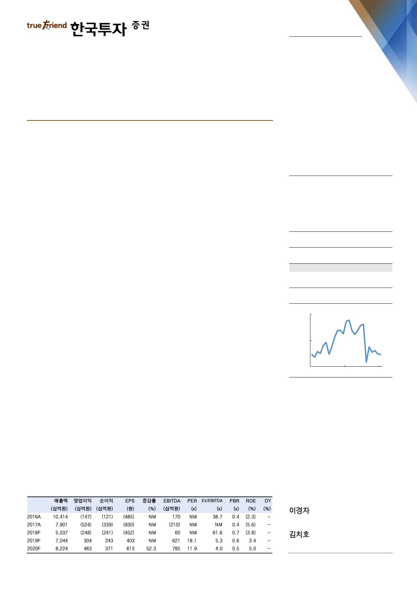

기업 Note
2018. 5. 31
삼성중공업(010140)
단기 모멘텀 부족해도 체력은 달라졌다
매수(유지)
목표주가: 9,000원(하향)
2018년 말 예상 순차입금 0.8조원, 2년 만에 3.5조원 감소
5월 4일, 1.4조원의 유상증자 대금이 납입되며 삼성중공업의 유동성은 크게 확충되
었다. 2016년 말 4.3조원의 순차입금은 현재 약 1.3조원으로 추정되고 연말에는
0.8조원으로 줄어들 전망이다. 부채비율도 2016년 174%에서 2018년 말 100%
이하로 하락할 것이다. 4분기에는 resale에 성공한 Stena 세미리그의 잔금 3억달러
가 유입돼 유동성에 기여할 것이다. 현재 재무비율은 역사적으로도 안정적인 수준이
며 조선사의 주가는 차입금과 민감도가 높다. [그림 1]은 그런 점에서 의미가 있다.
Stock Data
KOSPI(5/30)
주가(5/30)
시가총액(십억원)
발행주식수(백만)
52주 최고/최저가(원)
일평균거래대금(6개월, 백만원)
유동주식비율/외국인지분율(%)
주요주주(%) 삼성전자 외 9 인
2,409
7,300
4,599
630
12,002/6,177
47,455
65.8/17.2
21.9
올해 최대 변화, 해양 리스크 제거
최근 대우조선해양은 2척의 ‘씨드릴’ 드릴십 resale에 성공했다. 삼성중공업도 씨
드릴에서 수주한 동일한 규모의 미인도 드릴십 2척을 보유 중이다. 매각가가 문제
일 뿐, 시추설비의 매수 수요가 늘고 있음은 대우조선해양 사례로 입증된 셈이다.
삼성중공업은 최근 대우조선해양의 resale 가격보다 높은 가격에 매각하겠다는 계
획이다. 중도금을 올려 받고 2019년 인도 연장에 합의해 리스크가 낮은 ‘OCR’ 드
릴십 2척을 제외한다면 현재 중재 중인 ‘PDC’ 드릴십 1척만 변수로 판단된다. 올
해 말까지 중재와 resale을 마무리하려 하며 장부가는 선가의 60%로 계상돼 있
다. 8척의 미인도 드릴십으로 고전하던 2016년 대비 불확실성은 대폭 제거되었다.
주가상승률
절대주가(%)
KOSPI 대비(%p)
주가추이
(원)
11,600
8,800
선가 인상을 위한 힘겨루기 중이나 P와 Q 모두 상승세
수주 목표는 82억달러이며 16억달러의 상선 수주를 기록 중이다. 연초 예상보다
더디다. 1) Sverdrup #2(5억달러) 등 중소 해양플랜트를 실주했고, 2) 주력 선종
인 LNG선과 컨테이너선의 inquiry는 대폭 늘고 있으나 선가 인상을 위해 발주처
와 조율이 길어지고 있기 때문이다. 2018년 수주 가정은 기존의 82억달러에서
71억달러로 하향하나 최근 조선사들이 체결한 수주 선가 감안 시 시간의 문제일
뿐, 삼성중공업 역시 P와 Q 모두 증가추세임은 분명하다. 2020년 예상 ROE를 7%
에서 6%로 낮춤에 따라 목표 PBR을 기존 1배에서 0.8배로 하향, 목표주가를 21%
하향한다. 단기 모멘텀은 부족해도 역사적 최대 수준의 유동성 확충, 해양 경쟁력
으로 향후 7조원대의 외형 유지가 가능하다는 점에서 장기 투자에 적합하다.
6,000
May-16
자료: WISEfn
1개월
(0.7)
3.5
6개월
(30.8)
(28.1)
12개월
(32.7)
(35.5)
May-17
May-18
주: 순이익, EPS 등은 지배주주지분 기준
kyungja.lee@truefriend.com
chiho.kim@truefriend.com